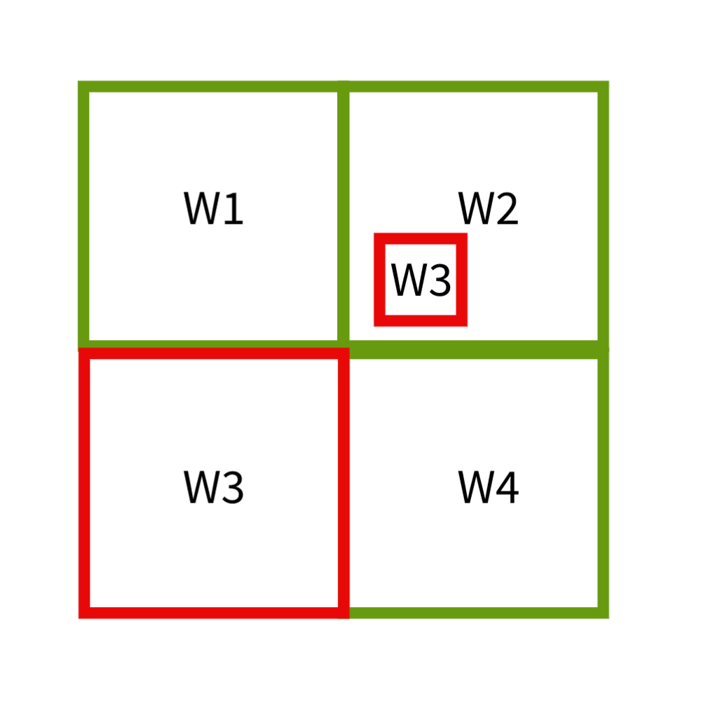

Redistricting Criteria
Ordinance #69185 stipulates that the new ward boundaries "shall comprise as nearly as practicable, compact and contiguous territory within straight lines, and contain as nearly as may be the same number of inhabitants." In addition to these criteria, there are other criteria that should be considered, as identified by Supreme Court case law. Such criteria include the preservation communities of interest, preservation of existing political and geographical boundaries, and respect for minority representation. For more information, the Brennan Center for Justice's A Citizen's Guide to Redsitricting is a useful resource. Below I have listed all of the criteria considered in my analysis, how such criteria were measured and the values needed to satisfy such criteria.
| Criteria | Description | Measure | Image | Value Needed to Satisfy Criteria |
|---|---|---|---|---|
| Equal population | Ward populations should be roughly equal in number. | Total population deviation between wards must not be greater than 10%. To check this, we can calculate the deviation for each ward and ensure that there is no difference in deviations between wards greater than 10%. | n/a | Total population deviation < 10% |
| Contiguity | Every part of the ward must be reachable from every other part without crossing the ward boundary. | This can be easily assessed visually. | In the following diagram, W3 represents a non-contiguous ward. | All wards must be contiguous. |
| Compactness | Every ward should have a regular shape with constituents living relatively close to each other. | This can be measured using the Polsby-Popper test. This is a mathematical measure of compactness. The value of this test will always fall between 0 and 1, where a score of 0 indicates a lack of compactness (a straight line) while a score of 1 indicates maximal compactness (a circle). | In the following diagram, W1 represents a non-compact ward while W2 represents a relatively compact ward. | Polsby-Popper score > 0.3 |
| Preservation of Minority Voting Power | Minority voting power should be preserved. This means that minority groups should have an effective opportunity to win a certain number of wards based on the region's total population. | St. Louis is 46.2% African American. Therefore, 46.2% of the wards (6-7 wards) should allow for African Americans to have an effective opportunity to elect a candidate of their choosing. An effective opportunity means having more than 50% minority population in a given ward. While St. Louis does have other minority populations, none have large enough of a population where they require a ward with an effective opportunity to elect a candidate of their choosing. | n/a | 6-7 wards with > 50% African American population |
| Preservation of Communities of Interest and Political and Geographic Boundaries | Communities of interest and political and geographic boundaries should be preserved where possible. Wards should not split up such boundaries. Neighborhoods in St. Louis represent communities of interest. Political boundaries in St. Louis include Special Business Districts, Tax Increment Financing Districts, Transit Orientated Development Districts and Community Improvement Districts. Geographic boundaries include parks. | For a given community of interest, political or geographic boundary, we can calculate how many times it is split up by the ward boundaries. We can do this for all features and calculate the average number of splits. Ward boundaries should minimize the number of splits that occur for communities of interest and political and geographic boundaries. | In the following diagram, feature "A" falls completely within ward 1, giving it a split score of 0. Feature "B" is split once between wards 3 and 4, giving it a cohesion score of 1. The average split score for both of these features is 0.5. | Average split score < 1 |